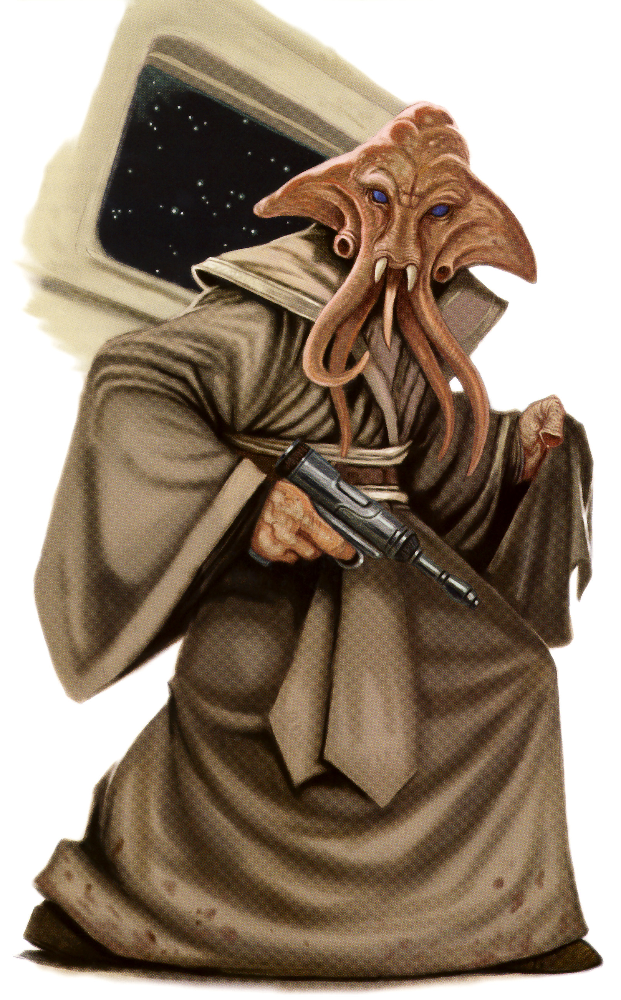

Quarren
quarren
Special Abilities: Quarren begin the game with one rank in Negotiation. They still may not train Negotiation above rank 2 during character creation.
Amphibious: Quarren can breathe underwater without penalty and never suffer movement penalties for traveling through water.
Ink Spray: Quarren can spit ink from a specialized sac within their gills that disperses in water, creating a brief murk used to confuse foes or escape predators. This ability can be used on land as well, though it is considerably less effective because it must be sprayed directly on the target. Once per encounter, as an out-of-turn incidental, a Quarren may suffer 2 strain to add to a combat check made by a character within short range (underwater, it adds to the combat check instead).
Persistent and proud, the Quarren are deep-sea dwellers of the oceanic planet Mon Cala, or “Dac” as it is called in the native Quarren tongue. The distrusting and often paranoid nature of these stubborn aquatic humanoids makes them successful in a wide range of business, political, and underworld professions.
The Quarren are a sinewy, humanoid species descended from cephalopods, with triangular heads and four tentacles protruding from their faces. A trio of sharp fangs lines their tiny mouths and works in concert with their prehensile face tentacles to communicate and feed. Above the cluster of tentacles is a pair of luminous blue or turquoise eyes that other species find intense. This unusual appearance has led to members of many other species referring to them by the derogatory term “squid-faces."
Most Quarren possess lithe frames of toned muscle used to navigate their ocean homeworld with ease. Their leathery skin usually presents in subtle variations of pinkish-orange, but some Quarren are a mottled brown or gray-green. Quarren with pink or purple skin are extremely rare and considered wildly beautiful among their species. The average Quarren has five sucker-tipped fingers on each hand, but some individuals exist with claws instead of suction cups. Still others have only three fingers with suckers or claws. While Quarren are amphibious, they are natural swimmers and are more comfortable breathing underwater.
Quarren exemplify resilience, not only in physique but in temperament. Proud to the point of stubbornness, Quarren prefer to adhere to tradition and often reject unnecessary change at all costs. Quarren are cautious and pessimistic, so their culture progresses only through absolute necessity and methodical planning. This tenacity often leads them to distrust idealistic cultures, creating tension between their species and the Mon Calamari with whom they share their world.
For untold ages, the Quarren maintained a peaceful existence at the bottom of the sea on their homeworld of Dac, sometimes interacting with other sentient beings of their world, such as the hive-minded jelly Moappa and the enormous marine mammals, the Whaladons. Their tribal society upheld the traditional ways of their ancestors, mining abundant mineral lodes from Dac’s underwater mountains and spearfishing off the coast of small island chains to support their modest civilization. All that changed when the Quarren made first contact with Dac’s other sentient bipeds, the Mon Calamari. The Quarren’s conservative and sometimes cynical nature stood in stark contrast to the Mon Calamari’s tendencies toward creativity, idealism, and optimism. The culture clash between the two societies proved too much for the Quarren to bear. The antagonistic and territorial Quarren declared war on the Mon Calamari.
The brutal and prolonged conflict between the two civilizations ended in the near extermination of the Quarren species. In the wake of their victory, many Mon Calamari attempted to promote peaceful coexistence between the two species, although their societies were largely isolated—the Mon Calamari in their floating cities, and the Quarren in their cities and mining outposts on the seafloor. Deep rifts between the two species remained, the Quarren embittered by their defeat and what they saw as attempts to erase their culture, and the Mon Calamari frustrated by the failure of diplomacy. Tensions boiled over into open conflicts from time to time, although there were also periods of relative peace and cooperation. The Empire’s arrival on Mon Cala has been yet another stumbling block for reconciliation between the two species.
Despite their lack of involvement in the fight against the Empire, the Quarren shared the Mon Calamari’s fate for resisting Imperial reign and now live in slavery. For two decades, the Quarren mined valuable resources in labor camps to feed the ravenous Imperial military-industrial complex. Some Quarren fled their oceanic homeworld to escape the Empire's stranglehold, while others sought refuge undersea in hidden grottos and forgotten mining outposts.
Because of the oppression of Mon Cala, many Quarren resist the Empire’s rule, while others work alongside it for their own personal gain. Such matters fall to the individual to decide, but the choice to resist the Empire or collaborate is one of extreme consequence to many Quarren. Fighting the Empire means risking one’s life for the cause, but working alongside it means sacrificing innocent lives to maintain the Empire’s brutal regime.
The Quarren are native to the murky ocean depths of Dac, often called Mon Cala. The Outer Rim world is the last stop along the Overic Griplink beyond the Tion Cluster, and it has been a major exporter of luxury star cruisers for millennia. A vast, planet-wide ocean covers Dac’s surface, with only a handful of islands and coral reefs breaking the waves. Dac supports a thriving marine ecosystem, and the Quarren share their world with several other sentient species such as the cetacean Whaladons and the idealistic Mon Calamari.
Immense cities and other population centers both float atop and beneath the seas of Dac. Mon Calamari City, nicknamed “Coral Depths City” by some for its abundance of beautiful multi-colored coral gardens, has districts above and below the surface. It serves as the planet’s seat of government. Other floating metropolises like Foamwander, Fleurkea, Flikahi, KeePiru, Orotoru G’am, and Reef Flome drift around the ocean world, each with their own unique architectural designs. Aquarius and other enormous domed cities and mining colonies exist beneath the waves where Mon Calamari, Quarren, and Whaladons live and work together. Even cultural centers like the community of intelligent mollusks known as the Knowledge Bank lie nestled between underwater mountain ranges.
Quarrenese, the native language to the Quarren species, is a unique collection of bellowed moans, reedy cries, and bubbly croaks capable of traveling great distances underwater. Without fluid to force through their mantles, Quarren find it difficult to speak Quarrenese in the open air. Because of this, most Quarren also speak Basic with a gravelly, sometimes gurgled, tone when communicating with others above water. Due to their frequent interaction with the Mon Calamari, Quarren also tend to speak Mon Calamarian.
Although by nature Quarren are reclusive and prefer to remain on their homeworld, it is common to encounter them throughout the galaxy. Some Quarren feel compelled to leave their world to escape their dependency on the Mon Calamari or their servitude to the Galactic Empire. While not all Quarren are slaves to the Empire, most are wisely distrustful of Imperials.
Some Quarren prefer to occupy the fringes of society and follow their natural aggression and distrust by seeking work as mercenaries, pirates, slavers, Smugglers, and spies. Flowever, their conservative and meticulous tendencies also make them capable accountants and business managers. Their mistrusting and self-serving nature make them accomplished infochants, politicians, and crime bosses. Many Quarren blame both the Empire and the Rebellion for the destruction that has transpired on their world, disapproving of the Mon Calamari’s choice to openly ally with the Rebel Alliance. They try to stay clear of both groups whenever possible.
Quarrens and Mon Calamari have been at odds with one another for eons, despite (or rather, because of) their shared homeworld. Some carry ancient grudges to the fringes of galactic society. Others, however, are simply pleased to see any sentient from their watery home—especially those forced to leave their homeworld during the Clone Wars or another upheaval. An individual Quarren encountering a Mon Calamari in the Outer Rim might well choose to focus on their many similarities rather than the rifts between their species in the past.
Players who choose to create Quarren PCs should consider whether their characters are bitter about these old conflicts and still feel animosity toward the Mon Calamari, wish to reconcile with their ancestral neighbors, or do not care about the politics of their homeworld at all in the face of pressing personal issues. Thinking about these issues can help to define individual Quarren characters beyond the widespread stereotypes about their species, and helps the CM create interesting hooks for the PC (and the party) to explore.